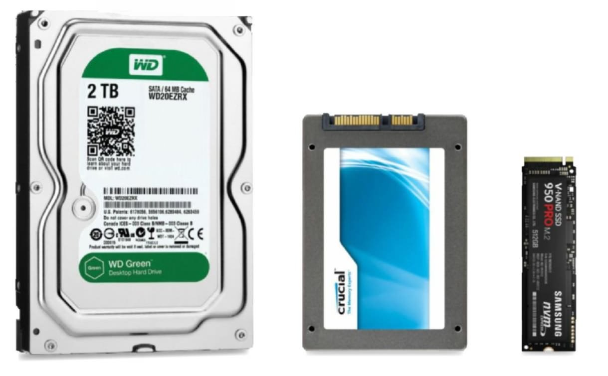

Storage for Beginners: SSD vs HDD and Everything In Between
Written by: The PC Parts Guide Team
March 2026 • 7 min read
Storage is where ALL your files live permanently — your Windows installation, your games, your documents, your photos. Get too little and you'll run out of space. Get the wrong type and your PC will feel sluggish no matter how powerful your CPU or GPU is.
Storage Is Your PC's Filing Cabinet
If RAM is your desk (short-term workspace), then storage is your filing cabinet. It holds everything permanently — even when the power is off. When you click on a game or program, Windows fetches it from your storage and puts it on your desk (RAM) so your CPU can work with it.
A slow filing cabinet (old HDD) means it takes forever to find and pull out files. A fast filing cabinet (NVMe SSD) means everything happens almost instantly.

From left: HDD (3.5"), SATA SSD (2.5"), and NVMe SSD (M.2).
The Three Types of Storage
💿 HDD (Hard Disk Drive) — The Old School
HDDs use spinning metal disks and a physical arm to read/write data — like a tiny record player. They're slow but very cheap per gigabyte.
Very cheap — 1TB for ₱1,500–2,500
Great for bulk storage (movies, backups, large files)
Very slow — boot time can be 2–3 minutes
Loud — you can hear it spinning and clicking
Fragile — drops can destroy your data
Heavy and takes up a full 3.5" drive bay
Best for: Secondary storage only — never use it as your main/boot drive.
SATA SSD (Solid State Drive) — The Upgrade
SSDs have no moving parts — they store data in flash memory chips, like a giant USB flash drive. SATA SSDs use the same cable as old HDDs, making them a straightforward upgrade.
~5x faster than HDD — Windows boots in 15–20 seconds
Silent — no moving parts
More durable — no spinning disks to break
Easy to install (same bay as HDD)
Slower and more expensive than NVMe
500GB costs around ₱2,000–3,500
Best for: Budget builds where you need more storage than a single NVMe can give.
NVMe SSD (M.2) — The Fast One
NVMe (Non-Volatile Memory Express) SSDs plug directly into your motherboard via an M.2 slot. They're about the size of a stick of gum and are dramatically faster than SATA SSDs.
No cables needed — plugs straight into the motherboard
Compact — frees up space inside your case
This is the standard for all new builds in 2026
More expensive per GB than SATA SSD
Requires M.2 slot on your motherboard (most modern boards have 1–3 slots)
Best for: Your main drive (Windows + games). Always use this as your boot drive.
THE VERDICT: In 2026, there's no reason to use an HDD as your main drive. Get an NVMe SSD for Windows and your most-played games. Add a cheap HDD only if you need bulk storage for large media files.
PCIe 3.0 vs PCIe 4.0: Does It Matter?
NVMe drives come in two main generations:
PCIe 3.0: Up to ~3,500 MB/s read. Still very fast, cheaper. (e.g. Samsung 980)
PCIe 4.0: Up to ~7,000 MB/s read. Twice as fast, slightly pricier. (e.g. Samsung 990 Pro, WD Black SN850X)
In real-world gaming and everyday use, the difference between PCIe 3.0 and 4.0 is very small — games load maybe 1–2 seconds faster. PCIe 4.0 matters most for large file transfers (video editing, moving big game files). If budget is tight, PCIe 3.0 NVMe is totally fine.
How Much Storage Do You Need?
500GB — The Bare Minimum
Windows 11 + basic apps + 2–3 modern games
Modern AAA games can be 100GB+ each (COD is 150GB!)
You'll run out of space very quickly
Best for: Super tight budgets only. Plan to upgrade.
1TB — The Sweet Spot
Windows + apps + 5–8 modern games comfortably
The standard recommendation for most gamers
Great balance of price and capacity
Best for: Most gamers and students.
2TB+ — For Heavy Users
Large game libraries without constantly deleting things
Video editing projects, large photo libraries
Content creators and streamers
Best for: Gamers who own many AAA titles, content creators.
COMMON SETUP: 1TB NVMe for Windows + games, plus a 1–2TB HDD for storing movies, old files, and backups. Best of both worlds!
Recommended Drives
Drive
Type
Capacity
Price
Best For
Kingston NV3
NVMe PCIe 4.0
500GB
~₱2,500
Budget boot drive
Samsung 980
NVMe PCIe 3.0
1TB
~₱5,000
Reliable everyday use
WD Black SN850X
NVMe PCIe 4.0
1TB
~₱6,700
Gaming + fast transfers
Samsung 990 Pro
NVMe PCIe 4.0
1TB
~₱7,500
Content creation, best speed
Seagate Barracuda
HDD
2TB
~₱2,800
Bulk/secondary storage
QUICK SUMMARY:
• Storage = Permanent filing cabinet for all your files
• HDD = Slow and cheap, good for bulk backup storage only
• SATA SSD = Fast, affordable, good secondary drive
• NVMe SSD = Fastest, use this as your main drive always
• 1TB NVMe is the sweet spot for most gamers
• PCIe 4.0 is faster but PCIe 3.0 is still great for gaming